23. April – 25. Oktober 2026
„99 Schalen – ein Kosmos“
Museum für Ostasiatische Kunst, Universitätsstraße 100, Köln

Thomas Wagner über die Schalen von Young-Jae Lee
Keramische Werkstatt Margaretenhöhe. Gedrehte Gefäße und Gebrauchsgeschirr aus Essen – seit 1924, heute auf dem Gelände der Zeche Zollverein.
Aus der ständigen Wiederholung einer handwerklichen Technik, dem Drehen auf der Töpferscheibe, erwächst die vollkommene Schönheit einer Form.
1924 auf Initiative von Margarete Krupp für die Siedlung Margaretenhöhe gegründet. Seit 1927 den Formprinzipien des Bauhauses verpflichtet – über Otto Lindigs Schüler Johannes Leßmann.
Seit 1986 geprägt von Young-Jae Lee: Meisterstücke aus ihrer eigenen Hand und ein Geschirr, das seitdem nahezu unverändert in der Werkstatt gedreht wird.

„Sie erzählte von den Zeremonien in den Tempeln, dem Ritual eines hundertfachen Niederkniens, Niederfallens vor den Buddha-Statuen. Sie erzählte von ihrer Großmutter, die sich diesen geistig-körperlichen Übungen bis ins hohe Alter unterzog. Daran habe sie sich immer wieder erinnert, während sie ihre Schalen drehte, eine nach der anderen, ohne je darüber müde zu werden.“
Barbara Catoir, »Gespannte Lebendigkeit«
„Die minimale Veränderung ist Young-Jae Lees unbegrenzter Freiraum – in der Form wie in der Farbigkeit der Glasur und der Bemalung. Ihr geht es nicht um Formerfindung, sondern um die Individualität des Gefäßes.“
Zwei Traditionen treffen sich in ihren Gefäßen: die Ideen des Bauhauses, denen sie sich verpflichtet fühlt – und ihr koreanisches Erbe, „das heitere, schwerelose Empfinden für die Form und die subtilen Farben“.Gisela Jahn, »Gefäße drehen, Gefäße betrachten, Gefäße benutzen«

Alle Meisterstücke stammen aus der Hand Young-Jae Lees – von ihr selbst gedreht, bemalt und glasiert.
Feldspatglasuren, zum Teil mit Asche versetzt. Gebrannt im Gasofen bei etwa 1300 °C oder im Holzofen, wo sich reichere Tönungen und oft nicht zu steuernde Verfärbungen ergeben.
Alle Meisterstücke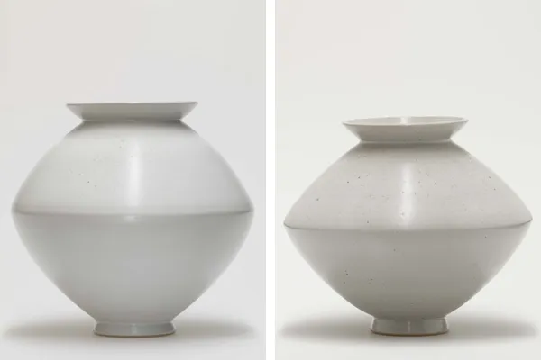
SpindelvaseH 35,5 cm, D 37 cm · Petalit-Eichenasche-Feldspat-Glasur · Holzofen 1260 °C · 2006/07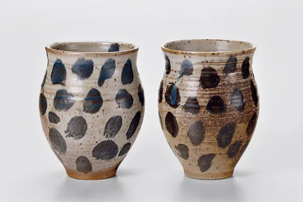
KummeH 18 cm, D 14,6 cm · Petalit-Eichenasche-Glasur · Holzofen · Essen 1995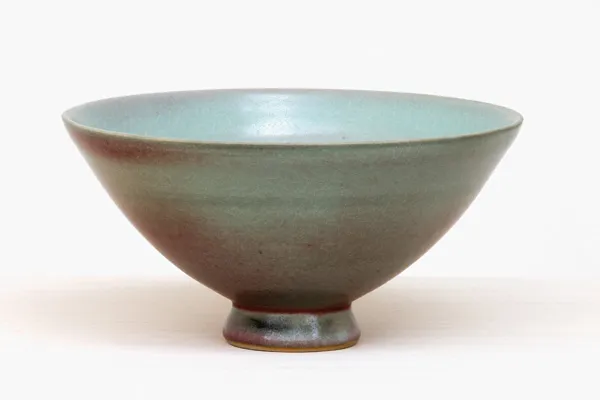
Schale, spitzH 10,5 cm, D 21,5 cm · Strontium-Feldspat-Glasur · 2003–2005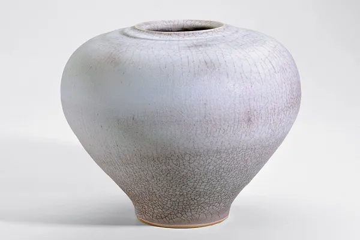
KugelvaseH 25 cm, D 32,5 cm · Barium-Feldspat-Glasur · Holzofen · Essen 1996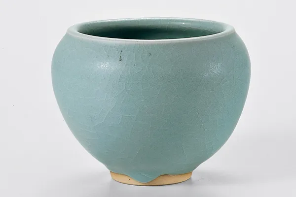
BettelmönchschaleH 10,2 cm, D 13,6 cm · Barium-Feldspat-Glasur · Gasofen · Essen 1988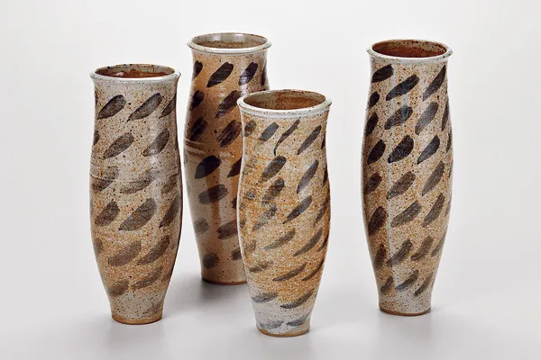
Zylindervasen, großH ca. 30 cm, D ca. 11,5 cm · Petalit-Eichenasche-Glasur · Holzofen · Essen 2003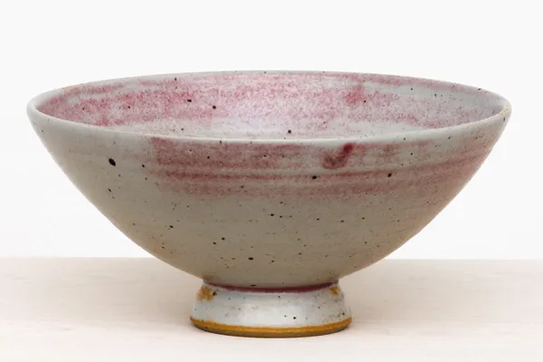
Schale, spitz, XXLH 10,5 cm, D 22,5 cm · Petalit-Eichenasche-Glasur · 2003–2005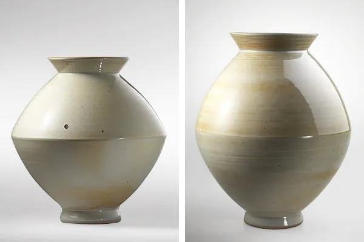
SpindelvaseH 34,7 cm, D 33 cm · Magnesium-Zinn-Feldspat-Glasur · Gasofen ca. 1280 °C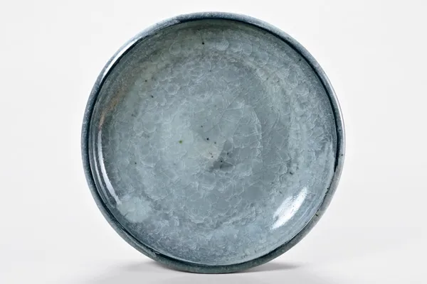
Große SchaleH 9,5 cm, D 53,5 cm · Wollastonit-Feldspat-Glasur · Gasofen · Essen 1994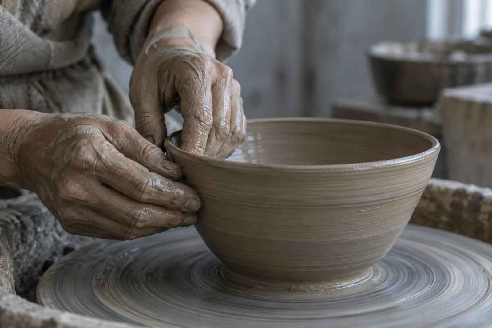
Young-Jae Lee dreht ihre Gefäße nach der östlichen Weise – gegen den Uhrzeigersinn. Abgedreht wird nach der westlichen, im Uhrzeigersinn: Der lederharte Ton wird mit dem Dreheisen spanweise abgetragen.
Porzellan liefert einen weißen Scherben, Steinzeug einen beigen, erdigen. Zum Teil mischt sie beide Massen, um die beste Drehfähigkeit und Tondichte zu erreichen.
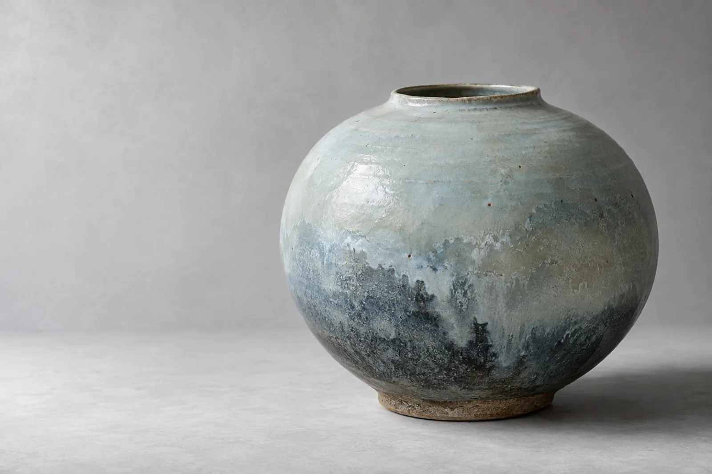
Die Herstellung jedes neuen Gefäßes gleicht einer Meditation.
Für Young-Jae Lee ist – in Anlehnung an die koreanische Tradition – nicht die ständige Neuerfindung von Formen entscheidend, sondern die vollkommene Beherrschung des vorhandenen Repertoires. Erst mit der Verinnerlichung der Formen wird die tägliche Arbeit an der Drehscheibe jenseits aller Routine zu einer Art Exerzitium. Die Persönlichkeit beginnt einzufließen, das Individuelle drückt sich im Handwerklichen aus.
„Schalen über Schalen, einfach auf den Boden gestellt. Ein Meer aus Schalen, ein Feld aus Kelchen, ein Ring aus Teilchen um eine leere Mitte, eine kleine Milchstraße voll schimmernder Gefäße.“
Thomas Wagner, »Die aufgehobene Zeit?«
99 Schalen
„99 Schalen – ein Kosmos“
Museum für Ostasiatische Kunst, Köln
bis 25. Oktober 2026
Im Holzofen wird über neun bis zehn Stunden kontinuierlich bis auf 1300 °C gefeuert – für einen Brand braucht es etwa 1,5 Festmeter Holz. Die Tönung wird reicher, manche Verfärbung lässt sich nicht steuern.
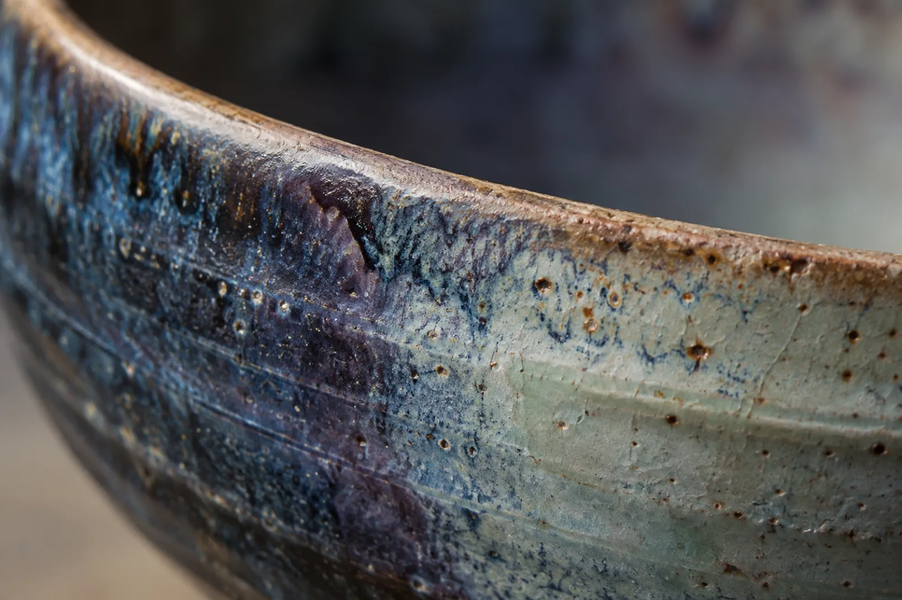
Unter Rückbesinnung auf die Grundprinzipien des Bauhauses entwickelte Young-Jae Lee mit Hildegard Eggemann, Michael Schmandt und Claudia Neumann die Formensprache des Manufakturprogramms: zuerst 25 Grundelemente eines Geschirrs – Teller, Schalen, Krüge.
„Jedes Stück muss gut zu drehen sein und auch zu benutzen. Alle Teile eines Geschirrs, gleich welcher Farbe, sollten miteinander kombinierbar sein.“
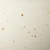
weißIn monatelangen Experimenten entstand die sechstonige Farbskala – von Schattierungen des Jadegrün über ein gebrochenes Weiß bis zu Rostbraun.
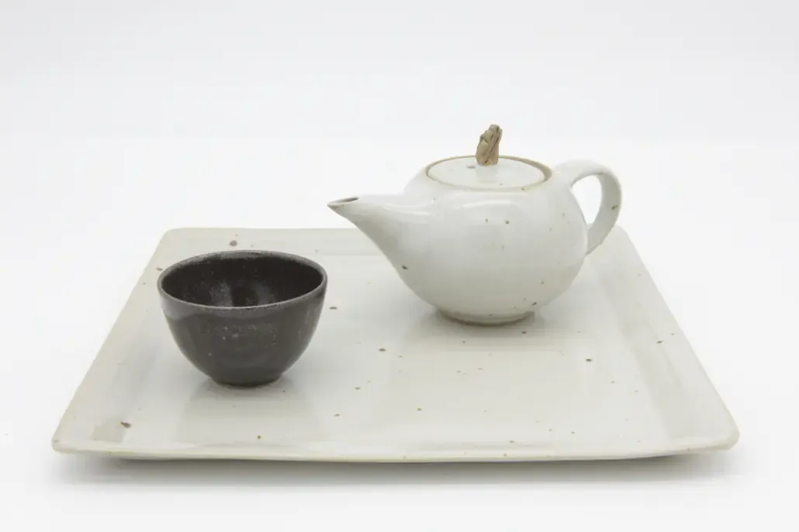
Margarete Krupp realisiert die Siedlung Margaretenhöhe in Essen. Hermann Kätelhön initiiert eine Keramikwerkstatt auf dem Gelände, Leiter wird Will Lammert.
Johannes Leßmann, Schüler des Bauhaus-Keramikers Otto Lindig, stellt auf Serienkeramik um – und verschafft der Bauhaus-Idee im Ruhrgebiet Breitenwirkung.
Umzug in ein Gebäude der Zeche Zollverein.
Walburga Külz, ebenfalls Schülerin Otto Lindigs, übernimmt die Leitung.
Helmut Gniesmer stellt das Programm vorwiegend auf Baukeramik um.
Young-Jae Lee und Hildegard Eggemann übernehmen die Leitung und nehmen das Manufakturprogramm wieder auf.
Umzug in das Baulager der Zeche Zollverein, heute Weltkulturerbe.
Young-Jae Lee übernimmt die Werkstatt von der RAG Aktiengesellschaft und führt sie als Geschäftsführerin.
Wenn Sie Stücke aus unserem Programm erwerben möchten, senden wir Ihnen gerne weitere Informationen oder ein Angebot zu. Oder Sie kommen vorbei.
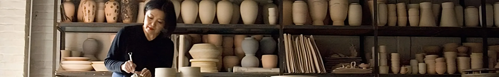